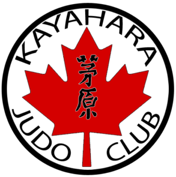

Welcome to Kayahara Judo Club
The Kayahara Judo Club was founded in 1975 by Mr. Murray Kayahara who was kindly referred to as the Father of Judo for SW Ontario Judoka’s. The Kayahara Judo Club is a registered non-profit organization geared to help children through the teachings of judo. Sensei Kayahara believed that the etiquette, discipline, and sportsmanship of Judo help build character in the youth of today.
 RegistrationA membership for new members costs $30 per month or $60 per family. When you arrive for the first time a liability waver must be signed before you participate in a class. All students must obtain insurance from Judo Ontario. If you are registering 4 or more family members, contact Judo Ontario direct for your discounted rate.
ScheduleMonday : 6:30pm - 8:30pm Wednesday : 6:30pm - 8:30pm
Location1921 Cabana Road West